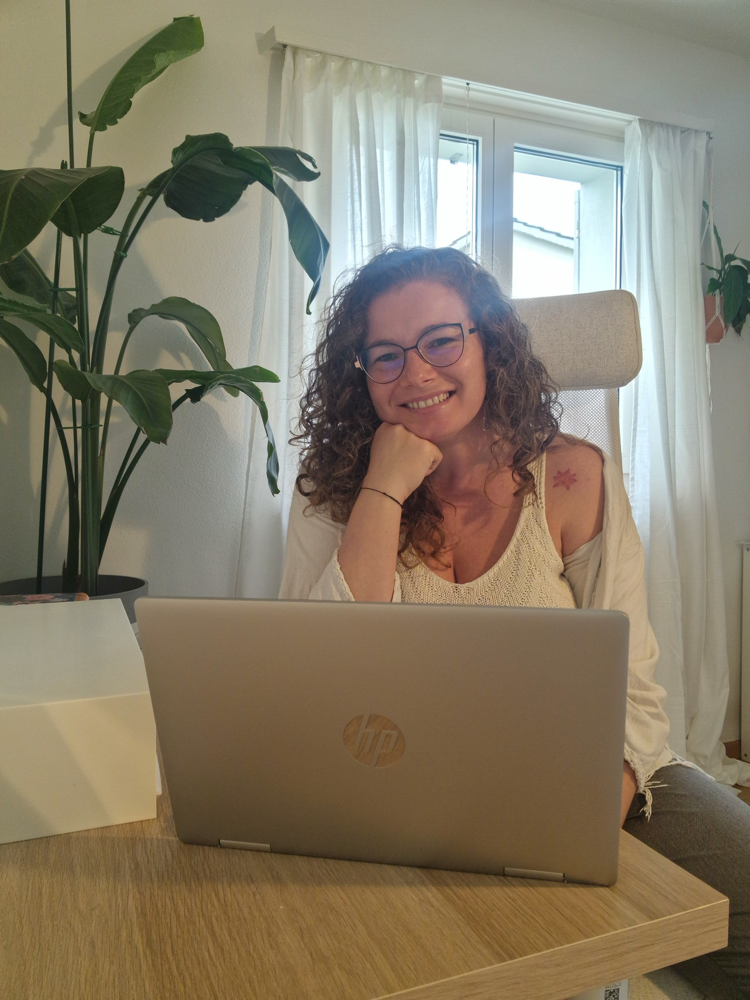
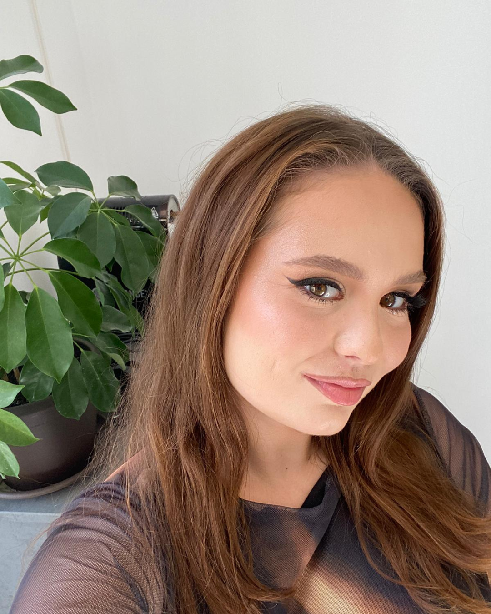
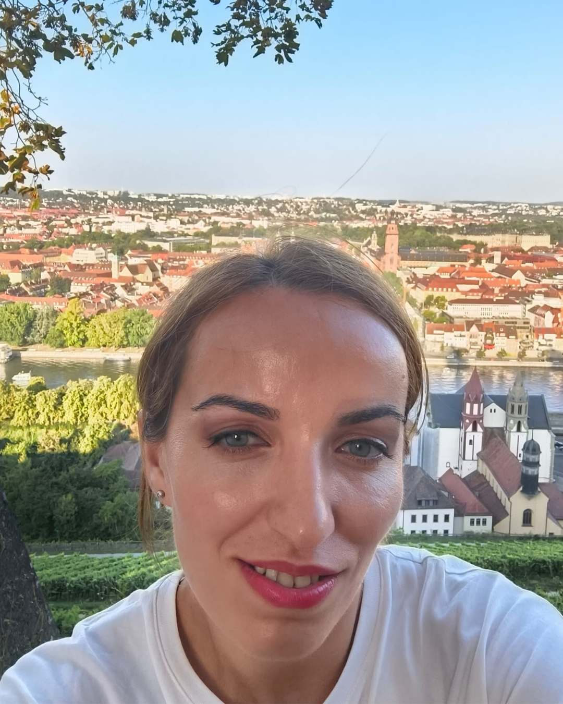

“This experience taught me that meaningful change starts with one small step. Roberta created a safe space where I could be vulnerable, rediscover my inner strength, and grow with compassion.”Tanita

Blooming Soul Journeys
What if you don’t have to become more,
only come back to yourself?
This is where you stop surviving and start living.
Take the free assessment →Find out how fulfilled are you, really?
A quiet recognition
You might be here because...
01
Your life looks good from the outside, yet you rarely feel fully inside it.
02
You are tired of being the reliable one while quietly disappearing from your own life.
03
You know something needs to change, but every next step feels heavy and uncertain.
04
You miss the version of you who had space to feel, want, create, and choose.

Meet Roberta
This work was born from my own journey back to myself.
After more than a decade in corporate environments, I realised that success means very little when you no longer feel present inside your own life.
Read my story →Featured group experience
Beyond Surviving
For women who are tired of holding everything together while quietly losing themselves.
5 Sept – 3 Oct 2026Saturdays
Small group10 women
Live onlineSupport & recordings

Client words
Real stories. Real transformations.

“Working with Roberta helped me release inner limitations and trust my own direction. I’ve learned to make decisions with confidence and see each step as part of the journey.”Andra

“Roberta’s calm, heart-centred presence helped me move from my head into my heart and reconnect with who I truly am.”Andrei
“These sessions helped me reconnect with my inner compass and rediscover what truly matters. I found clarity, confidence, and renewed self-awareness.”Stefan

“Working with Roberta feels like being gently guided by your own inner voice. What once felt impossible becomes within reach when you reconnect with your true self.”Mesi

“I’ve discovered the strength in saying no without guilt and honouring my own needs. I learned to trust myself and celebrate every small step forward.”Nicoleta
Your journey
Ways we can work together
First transformation
Beyond Surviving
Reconnect with yourself in a supportive five-week group experience.
Explore →The bridge
The Freedom Within
Remember who you are and create a life that reflects it, in a group or privately.
Explore →Deepest support
Inner Bloom
Ongoing, deeply personalised 1:1 support for lasting inner transformation.
Explore →
Your next step
Not sure where to start?
Begin with the free assessment. It offers one honest look at the full picture.
Take the free assessment →